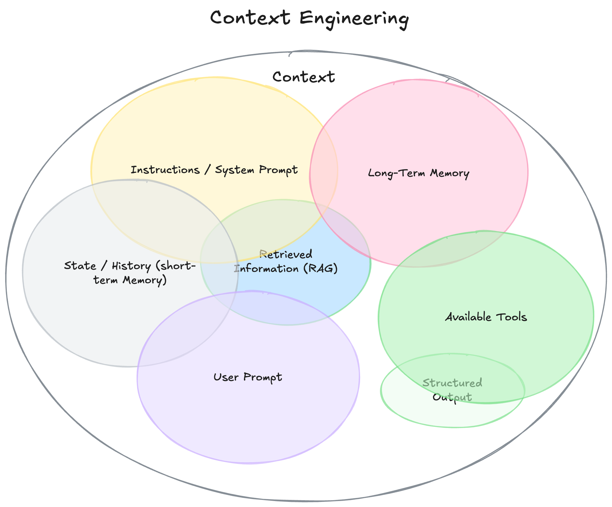

AI的新技能不是提示词，而是上下文工程
最近，“上下文工程”（Context Engineering）这个新词在AI领域越来越受关注。人们的讨论焦点，正从原本的“提示词工程”（Prompt Engineering）转移到一个更广泛、更强大的概念上：上下文工程（Context Engineering）。Tobi Lutke[1] 把它描述为：“提供所有必要的上下文，让大语言模型能够合理地完成任务的一门艺术。” 他是对的。
随着AI智能体的兴起，如何将信息有效地装入其有限的“工作记忆”变得更加关键。如今决定AI智能体成功或失败的关键因素，不再是模型本身，而是你提供给它的上下文质量。大多数智能体的失败，其实不再是模型的失败，而是上下文的失败。
什么是“上下文”？
要理解上下文工程，我们首先得拓宽对“上下文”的定义。它不仅仅是发给大语言模型的一句提示词，而是模型生成回答之前所看到的一切信息。

Context
• 指令 / 系统提示词： 定义模型整体行为的初始指令，可以（也应该）包含示例、规则等。
• 用户提示词： 用户提出的即时任务或问题。
• 当前状态或对话历史（短期记忆）： 用户和模型此前的对话内容，展现当前交流的背景。
• 长期记忆： 跨多次对话积累的持久性知识库，比如用户喜好、历史项目摘要、记住的特定事实。
• 检索的信息（RAG）： 外部的、最新的信息，包括从文档、数据库或API获取的相关内容，用于回答特定问题。
• 可用工具： 模型可以调用的所有函数或内置工具定义（如检查库存、发送邮件等）。
• 结构化输出： 明确定义模型输出的格式，例如JSON格式的对象。
为什么重要？从低端演示到神奇的产品
构建真正有效的AI智能体的秘诀，与其说取决于你写的代码有多复杂，不如说取决于你提供的上下文质量。
创建智能体，真正关键的并非代码或框架，而在于你提供的上下文信息质量。举个例子，假设你让AI助手基于一封简单的邮件来安排会议：
嘿，想确认一下，你明天方便快速碰一下吗？
“低端演示”智能体只有糟糕的上下文，它只看到了用户的请求，尽管代码完全正确——调用大语言模型并获得了回应——但输出却呆板无用：
感谢您的信息。明天我可以，请问你想几点碰面？
“神奇的”智能体则拥有丰富的上下文。它的主要任务并不是决定“怎么”回应，而是去“收集信息”，以让大语言模型顺利实现目标。在调用模型前，你需要扩展上下文，比如包括：
• 你的日历信息（显示明天已满）。
• 你和发件人的历史邮件（决定适当的随意语气）。
• 你的联系人列表（识别对方是关键合作伙伴）。
• 可用的工具，比如发送邀请或邮件。
然后生成如下回应：
嘿，Jim！明天我的日程已经排满了，一整天都是背靠背的会议。周四上午我有空，不知道你是否方便？我已经发了个邀请，看看是否合适。
这种神奇效果，并非来自更聪明的模型或更精巧的算法，而是来自提供了适合任务的正确上下文。这正是上下文工程的意义所在。智能体的失败不再只是模型问题，而是上下文的失败。
从提示词工程到上下文工程
什么是上下文工程呢？如果说“提示词工程”聚焦在精心设计一句完美的指令，那么上下文工程的范畴就更加宽广。我们可以简单地定义它：
上下文工程是一门设计和构建动态系统的学科，能够在正确的时间，以正确的格式，为大语言模型提供恰当的信息和工具，使其能够完成任务。
上下文工程的特点包括：
• 它是个系统，而不是一句话： 上下文并不仅仅是一条静态的提示词模板，而是在模型调用之前运行的完整系统的输出。
• 动态生成： 根据即时任务需求动态生成。例如，某个请求可能需要日历数据，而另一个请求可能需要邮件内容或网络搜索结果。
• 提供正确的信息和工具，恰逢其时： 它的核心职责是确保模型不会遗漏关键细节（输入错误，输出必然错误）。这意味着只在需要时提供有用的知识（信息）和功能（工具）。
• 格式的重要性： 信息的呈现方式至关重要。清晰简洁的摘要好于杂乱无序的数据堆砌；明确的工具结构优于模糊的指令。
总结
构建强大且可靠的AI智能体，正逐渐不再是寻找魔法般的提示词或依赖模型更新，而变为如何高效地进行上下文工程。这要求你深入理解业务场景，清晰定义预期的输出，并妥善组织所有必要的信息，让大语言模型能顺利“完成任务”。
致谢
本文基于深入的人工研究与分析，并参考以下优秀的资料：
• Tobi Lutke的推文[2]
• Karpathy的推文[3]
• The rise of "context engineering"[4]
• Own your context window[5]
• Simon Willison的Context Engineering文章[6]
• Context Engineering for Agents[7]
原文：The New Skill in AI is Not Prompting, It's Context Engineering[8]
引用链接
[1] Tobi Lutke: https://x.com/tobi/status/1935533422589399127[2] Tobi Lutke的推文: https://x.com/tobi/status/1935533422589399127[3] Karpathy的推文: https://x.com/karpathy/status/1937902205765607626[4] The rise of "context engineering": https://blog.langchain.com/the-rise-of-context-engineering/[5] Own your context window: https://github.com/humanlayer/12-factor-agents/blob/main/content/factor-03-own-your-context-window.md[6] Simon Willison的Context Engineering文章: https://simonwillison.net/2025/Jun/27/context-engineering/[7] Context Engineering for Agents: https://rlancemartin.github.io/2025/06/23/context_engineering/[8] The New Skill in AI is Not Prompting, It's Context Engineering: https://www.philschmid.de/context-engineering